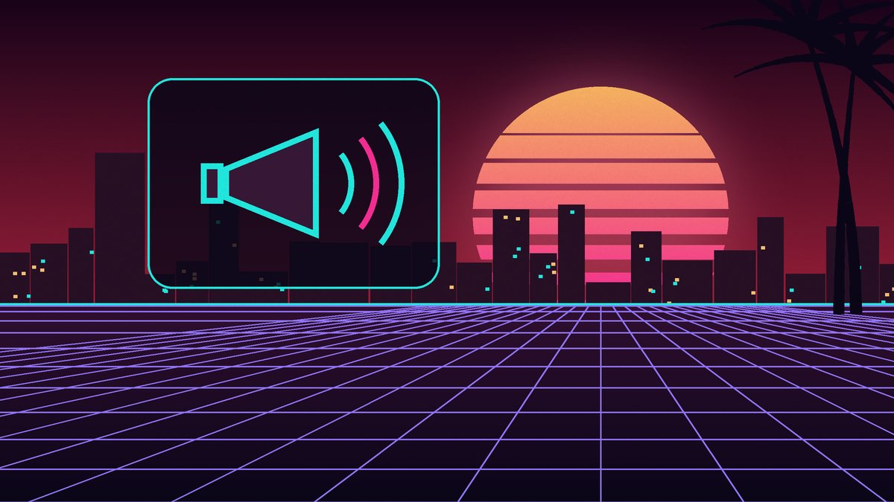

Keith Richards se hace DJ de blues en GTA 6, junto a Buddy Guy
El guitarrista de los Rolling Stones presenta su propia emisora dentro del juego, Gloriana Blues Radio, en compañía de la leyenda del blues Buddy Guy, y pone de su cosecha una versión de un clásico de Jimmy Reed.
Por Redacción Golpe Diario · Publicado el

Qué ha pasado
Keith Richards aparece acreditado como DJ Keith en GTA 6, copresentando la emisora Gloriana Blues Radio junto al guitarrista Buddy Guy, que figura como DJ Buddy. No es un rumor de la comunidad ni un dato sacado de archivos del juego sin anunciar: lo recoge Consequence a partir de los créditos de música publicados por Rockstar, y la guía de emisoras de KeenGamer lista a ambos como presentadores oficiales de esa emisora.
Gloriana Blues Radio repasa la historia del blues desde el gospel de antes de la Segunda Guerra Mundial hasta el blues eléctrico de Chicago. Según KeenGamer, en su lista de canciones conviven nombres como Muddy Waters, Howlin' Wolf, John Lee Hooker, B.B. King y Sister Rosetta Tharpe. En medio de esos clásicos suena también el propio Richards como artista: interpreta "Bright Lights, Big City", un tema compuesto originalmente por Jimmy Reed. Push Square, que ha repasado canción por canción cada emisora del juego, confirma que ese tema forma parte de la rotación de Gloriana Blues Radio.
La canción no es un inédito exclusivo del juego. En la página oficial de música de Rockstar, dedicada al álbum "Grand Theft Auto VI: The Album", "Bright Lights, Big City" figura como la pista número 32 y se atribuye directamente a Keith Richards. Quien quiera escucharla fuera de la partida puede hacerlo a través de ese álbum completo que ha publicado la propia compañía, sin depender de sintonizar la emisora dentro del juego.
Ninguna de las fuentes consultadas recoge declaraciones de Keith Richards ni de Buddy Guy sobre cómo grabaron sus partes como presentadores, así que de momento no hay ninguna cita suya que atribuirles. Lo que sí está confirmado es el reparto de la emisora: Rockstar ha repetido la fórmula de poner a artistas reales a presentar canciones de su propio estilo, algo que también hace en otras emisoras del juego con figuras como Gloria Estefan o Lindsey Buckingham, según el repaso de Consequence sobre los DJ de la banda sonora.
Qué significa para ti
- Para oírla, sube a cualquier vehículo y cambia de emisora hasta dar con Gloriana Blues Radio: ahí presentan Keith Richards, como DJ Keith, y Buddy Guy, como DJ Buddy.
- La canción de Richards es "Bright Lights, Big City": no busques ningún tema oculto aparte, es la misma versión que también puedes escuchar en el álbum oficial del juego.
- Si te gusta el blues clásico, en esa misma emisora suenan Muddy Waters, Howlin' Wolf, John Lee Hooker, B.B. King y Sister Rosetta Tharpe, según la guía de KeenGamer.
- No esperes encontrar declaraciones de Richards sobre su papel en el juego: ninguna fuente comprobada recoge citas suyas, así que el crédito de la banda sonora es, de momento, todo lo oficial que hay.
Contrastado con: Rockstar Games · Consequence · KeenGamer · Push Square
Sigue leyendo
El primer parche de GTA 6 ya está activo: arregla cuelgues y misiones que se quedaban atascadas
Rockstar ha publicado la actualización 01.002.002, el primer parche de GTA 6 desde el estreno. Corrige cuelgues del juego, el guardado automático y varios fallos que podían dejarte sin avanzar en una misión.
Rockstar explica cómo ha construido a cada vecino de Leonida para que no parezca un maniquí
Una entrevista de IGN a varios responsables de Rockstar North, recogida por otros medios especializados, destapa el trabajo que hay detrás de la gente que se cruza por la calle en GTA 6: más animaciones que en cualquier otro juego de la saga, un equipo dedicado solo a sus vidas y una norma que obliga a cada uno a tener su propia historia, aunque el jugador no la vea nunca entera.
Sam Houser habla en el estreno de GTA 6: «hemos intentado crear una experiencia que supere vuestras expectativas»
El presidente y cofundador de Rockstar, que casi nunca da declaraciones, mandó un texto a un medio mientras el juego se desbloqueaba por regiones. Resumimos lo que dice, con sus frases más claras citadas y atribuidas, y lo único que deja claro sobre el final de la historia.